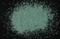

|
|
(For further information on spectroscopy, see:
http://speclab.cr.usgs.gov)
TITLE: Malachite HS254 DESCRIPT
DOCUMENTATION_FORMAT: MINERAL
SAMPLE_ID: HS254
MINERAL_TYPE: Carbonate
MINERAL: Malachite
FORMULA: Cu2CO3(OH)2
FORMULA_HTML: Cu2CO3(OH)2
COLLECTION_LOCALITY: Bisbee, Arizona
ORIGINAL_DONOR: Hunt and Salisbury Collection
CURRENT_SAMPLE_LOCATION: USGS Denver Spectroscopy Laboratory
ULTIMATE_SAMPLE_LOCATION: USGS Denver Spectroscopy Laboratory
SAMPLE_DESCRIPTION:
Original spectrum published in: Hunt, G.R., J.W. Salisbury, 1971, Visible and near-infrared spectra of minerals and rocks: II. Carbonates. Modern Geology, v. 2, p. 23-30.
With the following notes: "Malachite, CuCO3•Cu(OH)2, like azurite is a basic carbonate of copper. More common than azurite, it is still only a minor ore of copper, occurring as a secondary mineral in the upper oxidized zone of copper deposits. This particular sample appears to be relatively pure."
"Like azurite, malachite presents an atypical carbonate ion spectrum. Apart from the broad 0.8µm band and the short wavelength fall-off below 0.52µm, due to electronic transitions in the Cu2+ ion, only 3 bands are present. By analogy with the spectrum of pure CuCO3, we assign all three at 2.29, 2.37 and 2.52µm to the CO3" radical. Some contribution to the 2.37µm band may come from OH', but no other hydroxyl bands are visible in the spectrum, a circumstance for which we have no explanation."
IMAGE_OF_SAMPLE:

END_SAMPLE_DESCRIPTION.
XRD_ANALYSIS:
Malachite - major component
Possibility of some Mcguinnessite can't be ruled out
Trace of undetermined phase
Konnert, Judith and Marta Flohr, 1992, unpublished data, USGS Reston, VA.
END_XRD_ANALYSIS.
COMPOSITIONAL_ANALYSIS_TYPE: None # XRF, EM(WDS), ICP(Trace), WChem
COMPOSITION_TRACE:
COMPOSITION_DISCUSSION:
None.
END_COMPOSITION_DISCUSSION.
MICROSCOPIC_EXAMINATION:
END_MICROSCOPIC_EXAMINATION.
SPECTROSCOPIC_DISCUSSION:
END_SPECTROSCOPIC_DISCUSSION.
SPECTRAL_PURITY: 1b2b3b4_ # 1= 0.2-3, 2= 1.5-6, 3= 6-25, 4= 20-150 microns
| LIB_SPECTRA_HED: | where | Wave Range | Av_Rs_Pwr | Comment |
|---|---|---|---|---|
| LIB_SPECTRA: | splib04a r 2885 | 0.2-3.0µm | 200 | g.s.= |
| LIB_SPECTRA: | splib05a r 4267 | 0.2-3.0µm | 200 | g.s.= |
| LIB_SPECTRA: | splib06a r 13289 | g.s.= | ||
| LIB_SPECTRA: | splib06a r 13301 | g.s.= |
{kind=link}